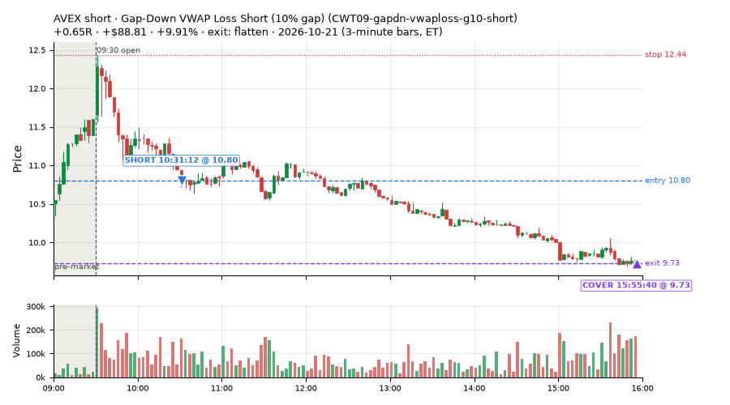
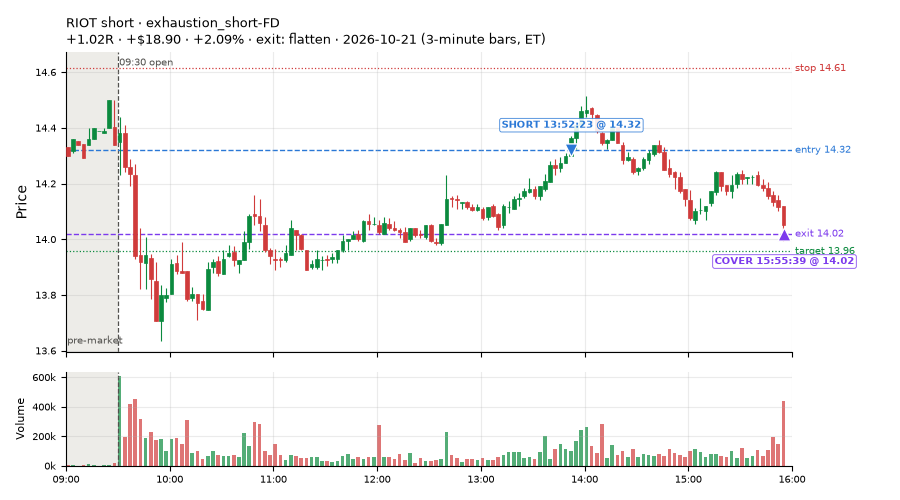
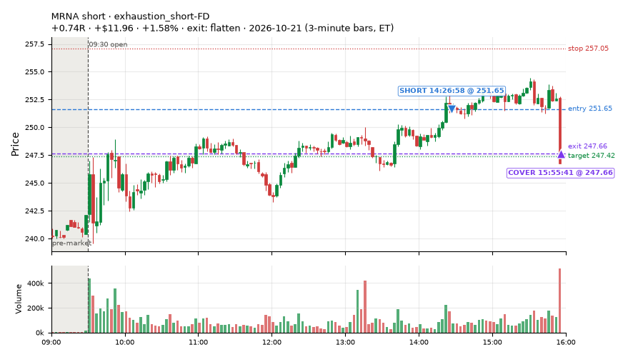
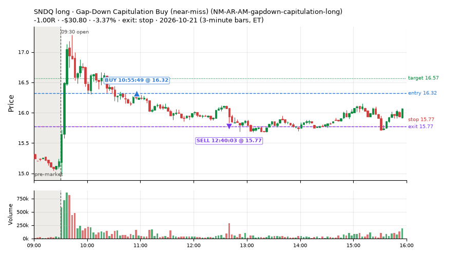
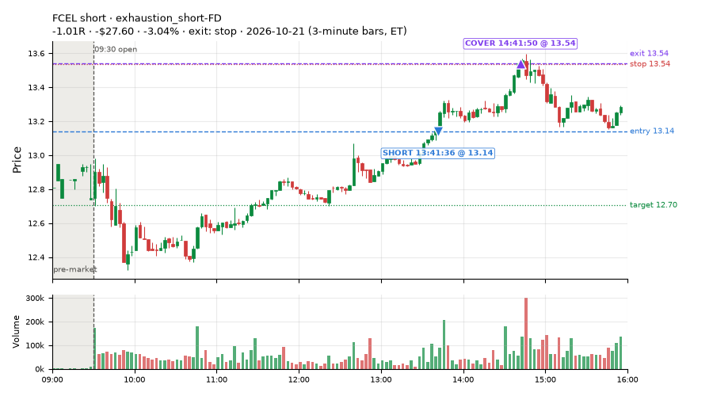
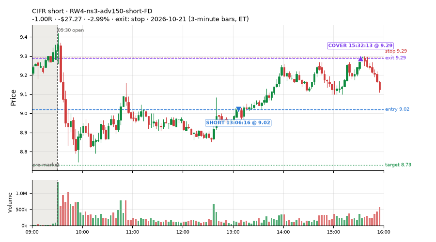
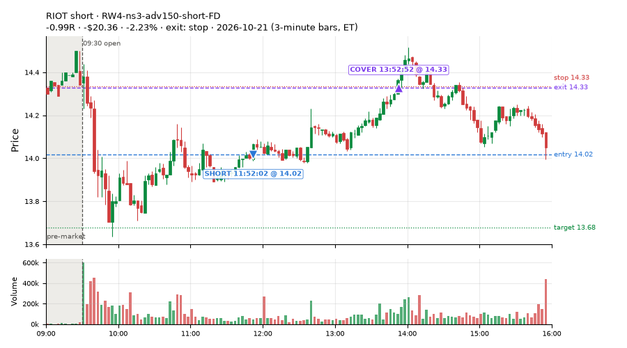
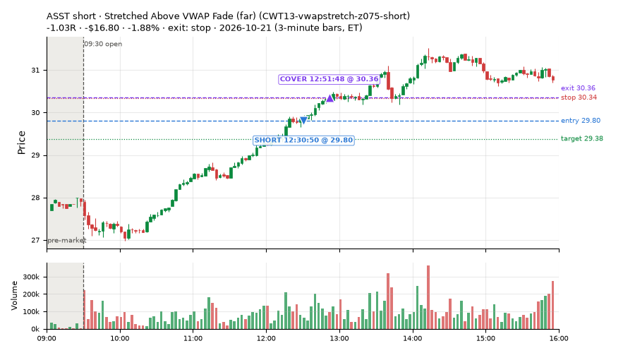

91 trades · win rate 57% · P/L $0.71
PROBATION: no live setup has passed both locked test periods. 10 owner-directed setups added 2026-10-08 (MarcoFlow top 5 + 5 new), untested live. RW6G1 (RW6 + VWAP band guard) added 2026-10-09, probation.

| Symbol | Setup | Side | In | Out | Entry | Exit | Exit reason | % gained | P/L |
|---|---|---|---|---|---|---|---|---|---|
| AVEX | Gap-Down VWAP Loss Short (10% gap) (CWT09-gapdn-vwaploss-g10-short) | short | 10:31 | 15:55 | 10.80 | 9.73 | flatten | +9.91% | $88.81 |
| RIOT | exhaustion_short-FD | short | 13:52 | 15:55 | 14.32 | 14.02 | flatten | +2.09% | $18.90 |
| MRNA | exhaustion_short-FD | short | 14:26 | 15:55 | 251.65 | 247.66 | flatten | +1.58% | $11.96 |
| Symbol | Setup | Side | In | Out | Entry | Exit | Exit reason | % lost | P/L |
|---|---|---|---|---|---|---|---|---|---|
| SNDQ | NM-AR-AM-gapdown-capitulation-long | long | 10:55 | 12:40 | 16.32 | 15.77 | stop | -3.37% | $-30.80 |
| FCEL | exhaustion_short-FD | short | 13:41 | 14:41 | 13.14 | 13.54 | stop | -3.04% | $-27.60 |
| CIFR | RW4-ns3-adv150-short-FD | short | 13:06 | 15:32 | 9.02 | 9.29 | stop | -2.99% | $-27.27 |
| RIOT | RW4-ns3-adv150-short-FD | short | 11:52 | 13:52 | 14.02 | 14.33 | stop | -2.23% | $-20.36 |
| ASST | CWT13-vwapstretch-z075-short | short | 12:30 | 12:51 | 29.80 | 30.36 | stop | -1.88% | $-16.80 |








Signal to fill: median 2s, 90th percentile 3s (91 trades). Bars close each minute; the order follows the bar close.
Best excursion (MFE): median 0.42R; worst (MAE) median 0.45R. 33% of trades never got +0.25R in our favour; 0 reached +1R and still closed at or below 0.
| Symbol | Setup | Best R | Worst R | Closed R |
|---|---|---|---|---|
| FIS | CWT14-failbrk-pdl-p05-lowvol-long | +7.16 | -0.88 | +0.45 |
| SUNB | CWT13-vwapstretch-z05-short | +0.42 | -1.02 | -1.09 |
| AVTR | CWT13-vwapstretch-z05-short | +0.65 | -0.93 | -0.86 |
| ROIV | NS5-sma50-flush-oversold-long-FD | +0.46 | -1.13 | -1.04 |
| FTNT | CWT14-failbrk-pdh-p10-lowvol-short | +0.39 | -1.03 | -1.02 |
| Entry time | Trades | Win | Avg R | P/L |
|---|---|---|---|---|
| 09:50-10:30 | 19 | 79% | +0.31 | $32.37 |
| 10:30-11:30 | 28 | 54% | -0.12 | $41.39 |
| 11:30-13:00 | 22 | 50% | -0.12 | $-59.53 |
| 13:00-14:00 | 9 | 22% | -0.40 | $-70.12 |
| 14:00-16:00 | 13 | 69% | +0.32 | $56.60 |
| Setup | Trades | Win | Avg R | Adj R (net of SPY) | P/L |
|---|---|---|---|---|---|
| Gap-Down VWAP Loss Short (10% gap) (CWT09-gapdn-vwaploss-g10-short) | 1.0 | 100% | +0.65 | +0.68 | $88.81 |
| Gap-Down VWAP Loss Short (5% gap) (CWT09-gapdn-vwaploss-g5-short) | 1.0 | 100% | +0.33 | +0.31 | $7.47 |
| Coil Under the High (4 bars) (CWT12-coil-k4-long) | 17.0 | 82% | +0.16 | -0.16 | $24.49 |
| Spike-Pullback Flag Breakout (CWT12-flag-s1-long) | 1.0 | 0% | -1.04 | -0.92 | $-14.40 |
| Stretched Below VWAP Bounce (CWT13-vwapstretch-z05-long) | 2.0 | 100% | +0.77 | +0.82 | $18.96 |
| Stretched Above VWAP Fade (CWT13-vwapstretch-z05-short) | 4.0 | 25% | -0.65 | -0.57 | $-25.49 |
| Stretched Above VWAP Fade (far) (CWT13-vwapstretch-z075-short) | 1.0 | 0% | -1.03 | -0.97 | $-16.80 |
| Failed Prior-Day-High Break Short (low volume) (CWT14-failbrk-pdh-p10-lowvol-short) | 12.0 | 42% | -0.13 | +0.31 | $-15.37 |
| Failed Prior-Day-Low Break Long (0.05 ATR, low volume) [fill] (CWT14-failbrk-pdl-p05-lowvol-long) | 12.0 | 75% | +0.13 | -0.02 | $11.33 |
| Failed Prior-Day-Low Break Long (CWT14-failbrk-pdl-p10-long) | 9.0 | 78% | +0.25 | +0.25 | $16.61 |
| MF5-flowsell-vwapup-rsi5hi-FD | 3.0 | 67% | +0.39 | +0.44 | $5.16 |
| Gap-Down Capitulation Buy (near-miss) (NM-AR-AM-gapdown-capitulation-long) | 3.0 | 0% | -0.96 | -1.05 | $-39.75 |
| NS5-sma50-flush-oversold-long-FD | 1.0 | 0% | -1.04 | -1.24 | $-8.50 |
| RW1-gapdn-bounce-flowsell-short-FD | 2.0 | 100% | +0.99 | +0.78 | $7.90 |
| RW4-ns3-adv150-short-FD | 13.0 | 23% | -0.21 | -0.27 | $-68.72 |
| exhaustion_short-FD | 9.0 | 56% | +0.14 | +0.08 | $9.01 |
Market direction (SPY, beta 1) accounted for $3.85 of today's $0.71; the rest ($-3.14) came from the setups themselves. Avg R net of SPY: -0.03 (incl. a hedge leg's cost; report only).
47 setups live today. Today: 151 signals, 91 taken, 1 lost because another setup held the symbol (1%). Since 2026-10-12 (8 sessions): 5966 signals, 2823 taken, 595 lost to other setups (10%). Peak open positions today 33 of 400 slots. Earnings blackout removed 552 symbols before scanning.
Simulated playing time (not live): 3135 what-if trades of signals not taken, avg -0.12R, 58% winners; of them 595 lost to another setup (avg -0.17R).
Silent: NM-RWR4-ns2-up3-qqqup-slopedn-short, NM-RWR1-exh150-gapdn-spyup-pm-short, NM-RWN4-ns2-spyup05-notfri-short, NM-AMS-N1-quiet-morning-short, NM-PM-gapdn-above-pdh-rvol-short, CWT04-backside-lh-a25-short, CWT04-backside-vwaptest-a25-short
| Prio | Setup | Today sig / taken | Sessions | Signals / taken / trades | Taken/day | Expected/day | Lost to other setups | Lost to (setup n) | Top skip reasons | SIMULATED: not-taken n / avg R / win | Verdict |
|---|---|---|---|---|---|---|---|---|---|---|---|
| 1 | * Oversold EMA Cross-Down with Breadth Turning Up (near-miss) LD4-st4-breadthup-t1s05-long | 0 / 0 | 1 | 0 / 0 / 0 | 0.00 | – | 0 | – | – | 0 / – | quiet - wait no signals in 1 session(s); too early to tell |
| 2 | * Oversold Slope Turn with Breadth Turning Up (near-miss) LD5-st2-breadthup-t05s1-long | 0 / 0 | 1 | 0 / 0 / 0 | 0.00 | – | 0 | – | – | 0 / – | quiet - wait no signals in 1 session(s); too early to tell |
| 3 | * SPY Dip of 0.30%, Breadth Turn (SPXL, trailing) (near-miss) LD8-spy-dip030-breadthturn-spxl-holdtr-long | 0 / 0 | 1 | 0 / 0 / 0 | 0.00 | – | 0 | – | – | 0 / – | quiet - wait no signals in 1 session(s); too early to tell |
| 4 | * Oversold Slope Turn after an SPY Dip-Turn (near-miss) LD3-st2-idxturn-t05s1-long | 0 / 0 | 1 | 0 / 0 / 0 | 0.00 | – | 0 | – | – | 0 / – | quiet - wait no signals in 1 session(s); too early to tell |
| 5 | * SPY Dip of 0.2 ATR, Breadth Turn (SPXL, trailing) (near-miss) LD6-spy-dip020atr-breadthturn-spxl-holdtr-long | 0 / 0 | 1 | 0 / 0 / 0 | 0.00 | – | 0 | – | – | 0 / – | quiet - wait no signals in 1 session(s); too early to tell |
| 6 | * Oversold Pop with Breadth Turning Up (near-miss) LD1-ns1-breadthup-t05s1-long | 0 / 0 | 1 | 0 / 0 / 0 | 0.00 | – | 0 | – | – | 0 / – | quiet - wait no signals in 1 session(s); too early to tell |
| 7 | * Shallow Nasdaq Dip, Breadth Turn (TQQQ) (near-miss) LD2-qqq-dip015-breadthturn-tqqq-t05s1-long | 0 / 0 | 1 | 0 / 0 / 0 | 0.00 | – | 0 | – | – | 0 / – | quiet - wait no signals in 1 session(s); too early to tell |
| 8 | * Oversold Pop after an SPY Dip-Turn (trailing) (near-miss) LD7-ns1-idxturn-holdtr-long | 0 / 0 | 1 | 0 / 0 / 0 | 0.00 | – | 0 | – | – | 0 / – | quiet - wait no signals in 1 session(s); too early to tell |
| 9 | Monday Weak-RS NS3 Short (near-miss) NM-RWN5-ns3-mon-weakrs-short | 0 / 0 | 3 | 6 / 5 / 5 | 1.67 | – | 0 | – | spread / quote / size 1 | 1 / -1.02R / 0% | slow 8.3 entries/week; ~7 weeks to 60 trades |
| 10 | Early NS3 Short While QQQ Up (near-miss) NM-RWR3-ns3-qqqup-early-short | 0 / 0 | 3 | 3 / 2 / 2 | 0.67 | – | 0 | – | spread / quote / size 1 | 1 / -1.02R / 0% | slow 3.3 entries/week; ~18 weeks to 60 trades |
| 11 | Early NS3 Short While SPY Up (near-miss) NM-RWN3-ns3-spyup-early-short | 0 / 0 | 3 | 3 / 2 / 2 | 0.67 | – | 0 | – | spread / quote / size 1 | 1 / -1.02R / 0% | slow 3.3 entries/week; ~18 weeks to 60 trades |
| 12 | Late-Day ETF Dip Buy (near-miss) NM-ETF-late-dip-di-long | 0 / 0 | 3 | 1 / 1 / 1 | 0.33 | – | 0 | – | – | 0 / – | slow 1.7 entries/week; ~36 weeks to 60 trades |
| 13 | NS2 Up-3 Short, QQQ Up, Slope Down (near-miss) NM-RWR4-ns2-up3-qqqup-slopedn-short | 0 / 0 | 3 | 0 / 0 / 0 | 0.00 | – | 0 | – | – | 0 / – | silent no signals in 3 session(s); no expected rate on file |
| 14 | Afternoon Exhaustion Short, Gap-Down, SPY Up (near-miss) NM-RWR1-exh150-gapdn-spyup-pm-short | 0 / 0 | 3 | 0 / 0 / 0 | 0.00 | – | 0 | – | – | 0 / – | silent no signals in 3 session(s); no expected rate on file |
| 15 | NS2 Short, SPY Up 0.5%, Not Friday (near-miss) NM-RWN4-ns2-spyup05-notfri-short | 0 / 0 | 3 | 0 / 0 / 0 | 0.00 | – | 0 | – | – | 0 / – | silent no signals in 3 session(s); no expected rate on file |
| 16 | Gap-Down Capitulation Buy (near-miss) NM-AR-AM-gapdown-capitulation-long | 3 / 3 | 3 | 3 / 3 / 3 | 1.00 | – | 0 | – | – | 0 / – | slow 5.0 entries/week; ~12 weeks to 60 trades |
| 17 | Quiet Downtrend Bounce Short (near-miss) NM-AMS-N1-quiet-morning-short | 0 / 0 | 3 | 0 / 0 / 0 | 0.00 | – | 0 | – | – | 0 / – | silent no signals in 3 session(s); no expected rate on file |
| 18 | Gap-Down Reclaim Fade, Afternoon (near-miss) NM-PM-gapdn-above-pdh-rvol-short | 0 / 0 | 3 | 0 / 0 / 0 | 0.00 | – | 0 | – | – | 0 / – | silent no signals in 3 session(s); no expected rate on file |
| 19 | Gap-Down VWAP Loss Short, Slope Filter (near-miss) NM1-cwt09-g10-vwaploss-short | 5 / 0 | 3 | 5 / 0 / 0 | 0.00 | – | 0 | – | not shortable / shorts off 5 | 5 / -0.95R / 0% | slow no entries yet |
| 20 | Afternoon Higher-Low Long (near-miss) NM-HL-T75-pm-long | 0 / 0 | 3 | 7 / 7 / 7 | 2.33 | – | 0 | – | – | 0 / – | slow 11.7 entries/week; ~5 weeks to 60 trades |
| 21 | Backside Lower-High Short (big runner) CWT04-backside-lh-a25-short | 0 / 0 | 8 | 0 / 0 / 0 | 0.00 | – | 0 | – | – | 0 / – | silent no signals in 8 session(s); no expected rate on file |
| 22 | Backside VWAP-Test Short (big runner) CWT04-backside-vwaptest-a25-short | 0 / 0 | 8 | 0 / 0 / 0 | 0.00 | – | 0 | – | – | 0 / – | silent no signals in 8 session(s); no expected rate on file |
| 23 | Gap-Down VWAP Loss Short (10% gap) CWT09-gapdn-vwaploss-g10-short | 5 / 1 | 8 | 32 / 3 / 3 | 0.38 | – | 0 | – | not shortable / shorts off 27, daily loss cap 1, spread / quote / size 1 | 29 / -0.26R / 45% | slow 1.9 entries/week; ~32 weeks to 60 trades |
| 24 | Panic Flush Reversal (deep, 5x volume) CWT05-flush-m075-v5-long | 0 / 0 | 8 | 5 / 3 / 3 | 0.38 | – | 0 | – | daily loss cap 2 | 2 / +0.52R / 100% | slow 1.9 entries/week; ~32 weeks to 60 trades |
| 25 | NS5-sma50-flush-oversold-long-FD NS5-sma50-flush-oversold-long-FD | 1 / 1 | 1 | 1 / 1 / 1 | 1.00 | 6.32 | 0 | – | – | 0 / – | watch 1.00 entries/day vs ~6.32 expected |
| 26 | Gap-Down Bounce Rejection Short (10% gap) CWT09-gapdn-bounce-g10-lowerhalf-short | 6 / 0 | 8 | 50 / 4 / 4 | 0.50 | – | 0 | – | not shortable / shorts off 44, spread / quote / size 1, broker rejected 1 | 46 / -0.80R / 13% | slow 2.5 entries/week; ~24 weeks to 60 trades |
| 27 | Backside Lower-High Short CWT04-backside-lh-a15-short | 0 / 0 | 8 | 3 / 1 / 1 | 0.12 | – | 0 | – | daily loss cap 1, spread / quote / size 1 | 2 / -0.05R / 50% | slow 0.6 entries/week; ~96 weeks to 60 trades |
| 28 | Panic Flush Reversal (5x volume) CWT05-flush-m05-v5-long | 0 / 0 | 8 | 8 / 4 / 4 | 0.50 | – | 1 | CWT14-failbrk-orl-p10-long 1 | daily loss cap 2, symbol held by another setup 1, spread / quote / size 1 | 4 / +0.58R / 100% | slow 2.5 entries/week; ~24 weeks to 60 trades |
| 29 | Panic Flush Reversal (deep, 3x volume) CWT05-flush-m075-v3-long | 0 / 0 | 8 | 12 / 8 / 8 | 1.00 | – | 0 | – | daily loss cap 3, broker rejected 1 | 4 / +0.46R / 100% | slow 5.0 entries/week; ~12 weeks to 60 trades |
| 30 | Spike-Pullback Flag Breakout CWT12-flag-s1-long | 1 / 1 | 8 | 12 / 8 / 8 | 1.00 | – | 0 | – | daily loss cap 2, spread / quote / size 1, broker rejected 1 | 4 / -0.16R / 75% | slow 5.0 entries/week; ~12 weeks to 60 trades |
| 31 | Backside VWAP-Test Short CWT04-backside-vwaptest-a15-short | 1 / 0 | 8 | 10 / 6 / 6 | 0.75 | – | 1 | CWT14-failbrk-pdl-p05-lowvol-long 1 | symbol held by another setup 1, daily loss cap 1, not shortable / shorts off 1 | 4 / +1.27R / 75% | slow 3.8 entries/week; ~16 weeks to 60 trades |
| 32 | Early Sellers into a Pop (index down, no gap up) (near-miss) NM-MF3-qqqdn-gapdn-FD | 0 / 0 | 1 | 0 / 0 / 0 | 0.00 | 4.90 | 0 | – | – | 0 / – | watch no signals in 1 session(s), ~4.9 expected |
| 33 | Stretched Above VWAP Fade (far) CWT13-vwapstretch-z075-short | 1 / 1 | 8 | 16 / 3 / 3 | 0.38 | – | 0 | – | not shortable / shorts off 8, daily loss cap 4, spread / quote / size 1 | 13 / -0.58R / 23% | slow 1.9 entries/week; ~32 weeks to 60 trades |
| 34 | RW1-gapdn-bounce-flowsell-short-FD RW1-gapdn-bounce-flowsell-short-FD | 3 / 2 | 1 | 3 / 2 / 2 | 2.00 | 17.10 | 0 | – | spread / quote / size 1 | 1 / +0.78R / 100% | watch 2.00 entries/day vs ~17.10 expected |
| 35 | MF5-flowsell-vwapup-rsi5hi-FD MF5-flowsell-vwapup-rsi5hi-FD | 3 / 3 | 1 | 3 / 3 / 3 | 3.00 | 15.47 | 0 | – | – | 0 / – | watch 3.00 entries/day vs ~15.47 expected |
| 36 | RW4-ns3-adv150-short-FD RW4-ns3-adv150-short-FD | 13 / 13 | 1 | 13 / 13 / 13 | 13.00 | 17.34 | 0 | – | – | 0 / – | ok 65.0 entries/week |
| 37 | Sellers into Strength (all day) MF5-flowsell-vwapup-rsi5hi | 0 / 0 | 1 | 0 / 0 / 0 | 0.00 | 15.47 | 0 | – | – | 0 / – | watch no signals in 1 session(s), ~15.5 expected |
| 38 | exhaustion_short-FD exhaustion_short-FD | 11 / 9 | 1 | 11 / 9 / 9 | 9.00 | 64.64 | 0 | – | not shortable / shorts off 1, spread / quote / size 1 | 2 / +0.90R / 100% | watch 9.00 entries/day vs ~64.64 expected |
| 39 | Gap-Down VWAP Loss Short (5% gap) CWT09-gapdn-vwaploss-g5-short | 11 / 1 | 8 | 171 / 30 / 30 | 3.75 | – | 2 | CWT14-failbrk-orl-p05-long 2, CWT14-failbrk-orl-p10-long 1 | not shortable / shorts off 112, spread / quote / size 18, daily loss cap 9 | 141 / -0.24R / 30% | ok 18.8 entries/week |
| 40 | Stretched Below VWAP Bounce (far) CWT13-vwapstretch-z075-long | 0 / 0 | 8 | 38 / 8 / 8 | 1.00 | – | 0 | – | daily loss cap 28, spread / quote / size 2 | 30 / -0.38R / 40% | slow 5.0 entries/week; ~12 weeks to 60 trades |
| 41 | Stretched Above VWAP Fade CWT13-vwapstretch-z05-short | 7 / 4 | 8 | 105 / 53 / 53 | 6.62 | – | 0 | – | daily loss cap 30, not shortable / shorts off 16, spread / quote / size 6 | 52 / -0.72R / 17% | ok 33.1 entries/week |
| 42 | Stretched Below VWAP Bounce CWT13-vwapstretch-z05-long | 2 / 2 | 8 | 187 / 29 / 29 | 3.62 | – | 1 | CWT14-failbrk-pdh-p05-lowvol-short 1 | daily loss cap 152, spread / quote / size 5, symbol held by another setup 1 | 157 / -0.13R / 60% | ok 18.1 entries/week |
| 43 | Failed Prior-Day-High Break Short (low volume) CWT14-failbrk-pdh-p10-lowvol-short | 19 / 12 | 8 | 179 / 102 / 102 | 12.75 | – | 8 | CWT14-failbrk-orl-p10-lowvol-long 3, CWT14-failbrk-pdh-p10-short 2, CWT14-failbrk-pdh-p05-lowvol-short 2 | spread / quote / size 49, daily loss cap 10, symbol held by another setup 8 | 77 / +0.14R / 78% | ok 63.8 entries/week |
| 44 | L3-gap-slope-rsi5hi-FD L3-gap-slope-rsi5hi-FD | 9 / 0 | 1 | 9 / 0 / 0 | 0.00 | – | 0 | – | not shortable / shorts off 9 | 9 / -0.31R / 56% | slow no entries yet |
| 45 | Failed Prior-Day-Low Break Long CWT14-failbrk-pdl-p10-long | 14 / 9 | 8 | 327 / 209 / 209 | 26.12 | – | 20 | CWT14-failbrk-pdl-p10-lowvol-long 15, CWT14-failbrk-pdl-p05-lowvol-long 4, CWT14-failbrk-pdl-p05-long 2 | spread / quote / size 56, daily loss cap 26, symbol held by another setup 20 | 117 / -0.06R / 65% | ok 130.6 entries/week |
| 46 | Failed Prior-Day-Low Break Long (0.05 ATR, low volume) [fill] CWT14-failbrk-pdl-p05-lowvol-long | 16 / 12 | 8 | 338 / 200 / 200 | 25.00 | – | 27 | CWT14-failbrk-pdl-p10-lowvol-long 17, CWT14-failbrk-pdl-p10-long 13, CWT14-failbrk-pdl-p05-long 7 | spread / quote / size 65, daily loss cap 40, symbol held by another setup 27 | 136 / -0.04R / 65% | ok 125.0 entries/week |
| 47 | Coil Under the High (4 bars) CWT12-coil-k4-long | 20 / 17 | 8 | 286 / 190 / 190 | 23.75 | – | 4 | CWT14-failbrk-pdl-p05-lowvol-long 1, CWT14-failbrk-pdl-p10-lowvol-long 1, CWT14-failbrk-pdh-p05-lowvol-short 1 | per-setup cap 41, spread / quote / size 31, daily loss cap 19 | 96 / -0.05R / 64% | ok 118.8 entries/week |
Every trade is attached as a CSV you can open and edit in Excel or Google Sheets. Live page: https://misiti15.github.io/MCF/live/